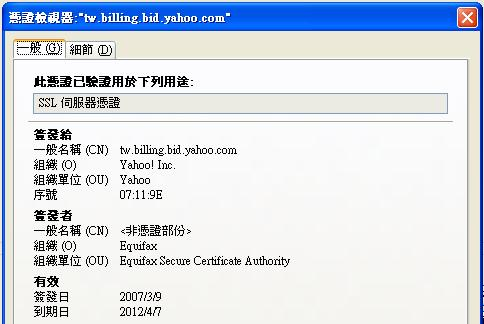

网页伺服器，有两种资料传输编码方式，第一种是 HTTP 方式，这个方式是使用纯文字传输，也就是完全没有加密，在资料传输的过程中，会经过不少路由器，这样传输的资料就有被盗取的可能性，所以才有人开发出 HTTPS 的编码方式，这个方式会使用 SSL 加密，由於资料是经过加密的，所以没有密码档的人是没办法解出资料内容的。
SSL : Secure Sockets Layer
SSL 使用的加密方式，其中包含两个 key(密码)，这两个 key 是对应关系，一个用来加密，一个是用来解密，一个 key 是 public key ，主要是用来加密资料，另一个 key 是 private key ，主要是用来解密， private key 只有伺服器知道，所以除了伺服器本身以外，其他人是很难解密的 (这理我只能说很难，因为还是有很低的机率被高人给解开!!) ，
CA : Certificate Authority
CA 是一个 key 的管理单位，这个单位主要是确认 private/public key 这两个 key 的公正性，只有 CA 证证过的 key 才是合法的 key ，浏览器会自动通过并使用这些 Key ，而如果我们自已建立的网站，是使用未通过 CA 证证的 key，也就是自已建立的 private/public key ，这样的话，浏览器就会出现警告的提示，提醒网页用户，这个 key 是未通过认证的。
一个有通过 CA 认证的 public key ，其内容会包含「公司名称、网域、申请人」等等， CA的认证是有时间限制的，过期后，就要重新再申请一次，所以并不是一劳永逸的。
HTTP & HTTPS
HTTP 一般都是使用 80 port ，而 HTTPS 是使用 443 port ，所以两种在网路上的传输是分开，同一台伺服器是可以同时支援两种传输模式， HTTPS 是指，browser 将传输的资料以 SSL 加密后，再使用 HTTP Protocol 并透过 TCP 方式传送出去，若是伺服器使用 HTTPS 传输方式，在 client 与 server 建立连线的同时，双方必需先沟通加密模式，不同的 SSL 版本，使用的加密方式是不同的，如 SSL 2.0是使用 RSA 加密演算法 。
Apache Module mod_ssl
网页伺服器 apache ，内建都已经有 ssl的模组，叫作 mod_ssl ，这个 module 支援 SSL 2.0 、SSL 3.0 、 TLS 1.0 加密模式， 这个 module会用到 OpenSSL library ，所以使用时，系统也必需安装 OpensSSL。
- //先进入 apache module 路径
- cd httpd-2.2.19/modules/ssl
- sudo apxs -c -i -D HAVE_OPENSSL -I/usr/include/ -lcrypto -lssl -ldl -A *.c
- LoadModule deflate_module modules/mod_ssl.so : apache conf 中指定要载入 Module
设定 apache 443 port 的 web site，首先在 http.conf 加入 Include httpd-ssl.conf ，然后在 httpd-ssl.conf 中加入下列设定，即可完成 HTTPS 的传输功能。
- Listen 443
- AddType application/x-x509-ca-cert .crt
- AddType application/x-pkcs7-crl .crl
- <VirtualHost *:443>
- ServerName xxx.com.tw
- DocumentRoot "/website/"
- SSLEngine on
- SSLCertificateFile /apache/server.crt // server 凭证
- SSLCertificateKeyFile /apache/server.key // private key
- SSLCertificateChainFile /apache/ca.cert // certification 公司的Certificate authorization 凭证，这个档案必须是 CA 公司给的。
- </VirtualHost>
HTTPS 的 Rewrite 设定，将 443 port 导到 HTTPS ，非443 port 导到 HTTP
- RewriteEngine on
- RewriteRule ^/(.*):SSL$ https://%{SERVER_NAME}/$1 [R,L]
- RewriteRule ^/(.*):NOSSL$ http://%{SERVER_NAME}/$1 [R,L]
SSL 凭证制作
首先在 Linux 系统中，安装 OpenSSL，一般来说系统内建都已经安装好了，这里就跳过这个流程，安装好的 OpenSSL 路径在 /usr/share/ssl/ ( 或是 /etc/pki/tls/openssl.cnf) ，
- mkdir ~/key : 先建立一个资料夹，准备来制作凭证。
- cd ~/key
- mkdir certs crl newcerts private : 建立这几个资料夹
- cp /usr/share/ssl/openssl.cnf ~/key/ 将 OpenSSL设定档搬过来
- openssl rand 1024 > ./private/.rand : 制作乱数档
- chmod 600 ./private/.rand
- echo "0001" > serial
- touch index.txt
- 修改 openssl.cnf
- dir = /home/xxxid/key //改成你自已的路径
- default_days = 365 //认证天数 365 天
- default_md = md5 //编码方式
- default_bits = 1024 //有分 1024 , 2048 两种位元数 ，2048 会比较安全，建议使用 2048
- certificate = $dir/cacert.pem // CA certificate 路径
- database = $dir/index.txt
- serial = $dir/serial //序号 ，会自动去读档
- openssl req -new -x509 -keyout private/cakey.pem -out cacert.pem -days 3650 -config openssl.cnf : 建立 private key 以及 填写 CA 申请资料
这一步会建立加密过的 private key ，以及 "certificate request " cacert.pem ，这个档案是没有经过签证的，还不能拿来使用，我们必须将这个档案传给 certificate 公司，请他们认证， 例如 startssl.com 这个网站就有免费的 certificate 认证，而加密过的 private key 也必须先经过解密，才能在 web service 上使用 ，startssl.com 就有提供解密工具： https://startssl.com/ToolBox/DecryptPrivateKey 。
如果你不想经过官方认证这个步骤，那么我们也可以伪造 certificate 认证，方式如下：
- openssl req -nodes -new -x509 -keyout mykey.pem -out myreq.pem -days 365 -config openssl.cnf : 填写伺服器资料，并解出 private key。
- openssl x509 -x509toreq -in myreq.pem -signkey mykey.pem -out tmp.pem
- openssl ca -config openssl.cnf -policy policy_anything -out mycert.pem -infiles tmp.pem : 自已签名，完成凭证
经过上述的步骤后，SSL certification 就算完成罗，接著把档案 copy 到正确的位置。
- cp cacert.pem /apache/ca.crt
- cp mycert.pem /apache/server.crt
- cp mykey.pem /apache/server.key
CA 认证公司
这里提供一些申请 CA 的公司，我自已是没申请过啦 XD ，有需要的人再自行去尝试罗。
- http://www.thawte.com/
- http://www.verisign.com/
- http://www.godaddy.com/ssl/ssl-certificates.aspx?ci=55902
测试是否可以成功用 ssl 连线
- openssl s_client -CAfile /www/xxx/xx/server.crt -showcerts -connect localhost:443
什么是 .csr .key .pem
在制作 SSL 时，常会看到这三个副档名，下面就来说明这三个名词。
.csr: 全名为 Certificate Signing Request ，是一个被加密过的档案，它的档案格式为 PKCS Public Key Cryptography Standards ，这个档案储存组织名称 ，国家，Domain Name 等，最重要的是这个档案也包含一个 public key，而因为 public/private key 是成对出现的，所以当你有一个 csr 档，也就代表你也会有一个 private key 档。
.key 这个档案就是一个私钥 private key ，它的档案格式为 PEM。
.pem 全名 privacy-enhanced mail， 它的档案格式定义在 RFC 1421，这种档案可以储存多种格式，一个档案可以有 public key 跟 CA certificate，也可以同时有 public key, private key, Root certificates，所有 SSL 相关的 public/private key , csr 都是使用 pem 格式。
测试 private key 与 certificate
如果你的 key 跟 certificate 不一致，那么可能会出现像下面这种错误讯息。
- Server {0x40a65b30} ERROR: SSL::0:error:0B080074:x509 certificate routines:X509_check_private_key:key values mismatch:x509_cmp.c
- Server {0x40a65b30} ERROR: failed to load server private key from xxx
这时可以用下面这两个简单的指令来测试，如果这两个指令印出的值不同，那么你的 key 与 certificate 是不一致，必须再建立一个新的 certificate。
- openssl x509 -noout -modulus -in pxxxx.crt | openssl md5
- openssl rsa -noout -modulus -in private.key | openssl md5
如果你是在 startssl.com 申请的免费 certificate ，可以参考这里的官方说明，如何设定你的 apache server
https://www.startssl.com/Support?v=21参考资料
- http://zh.wikipedia.org/wiki/RSA%E5%8A%A0%E5%AF%86%E6%BC%94%E7%AE%97%E6%B3%95 RSA 加密演算法
- http://httpd.apache.org/docs/2.0/ssl/ssl_faq.html
- http://httpd.apache.org/docs/2.0/ssl/ssl_intro.html#ssl
- http://httpd.apache.org/docs/2.0/mod/mod_ssl.html apache module ssl
- http://www.openssl.org/ OpenSSL
- http://www.debianhelp.co.uk/selfcert.htm
- http://devsec.org/info/ssl-cert.html